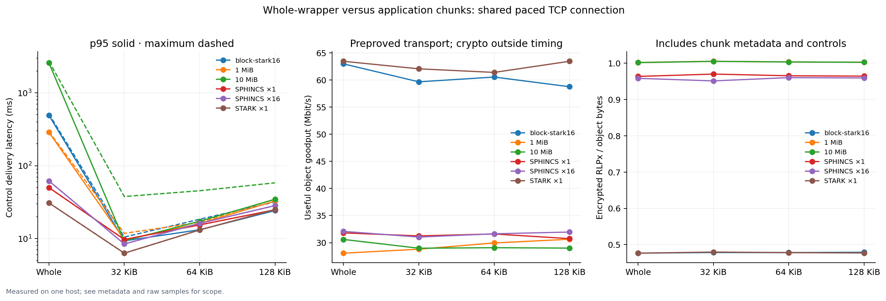
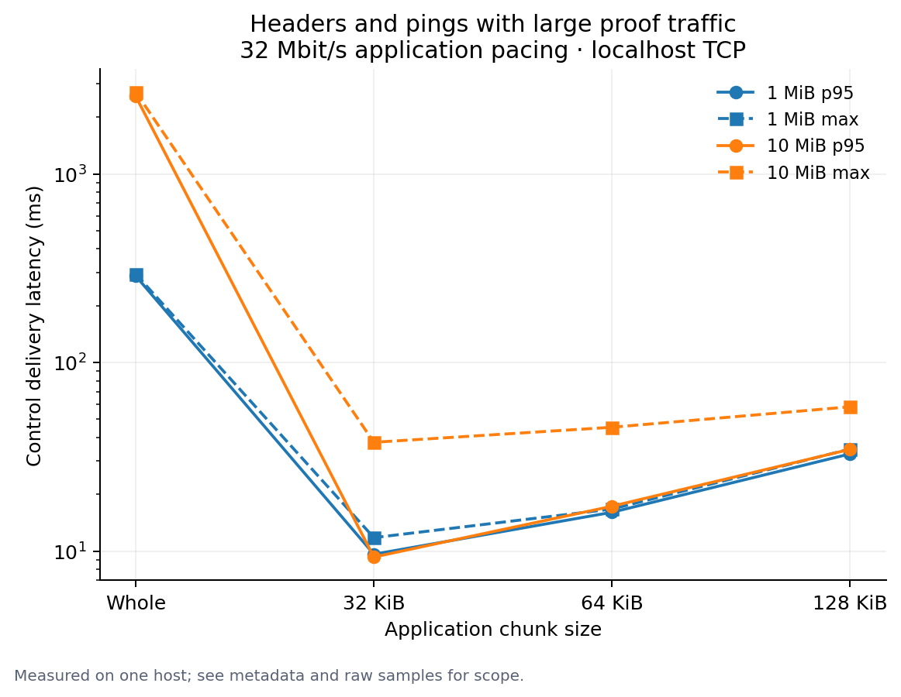
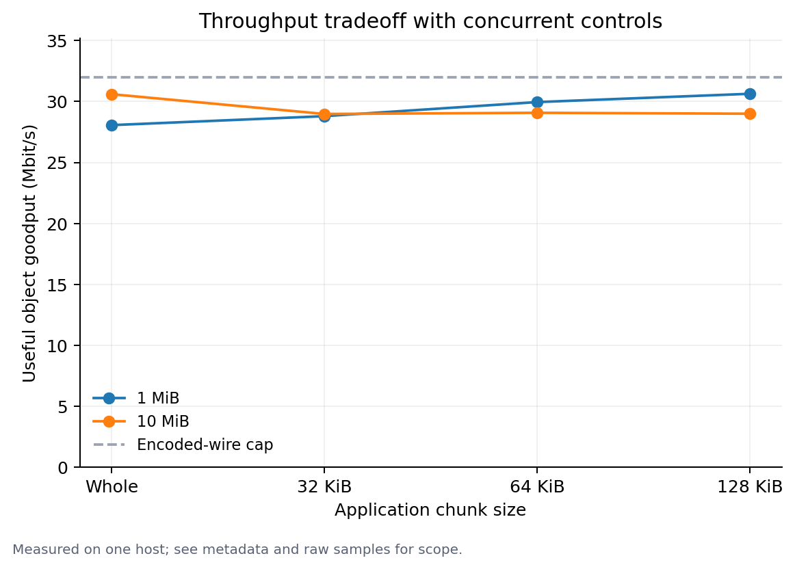

Localhost results are not WAN or mainnet capacity estimates. Load durations include drain time; consult raw rejection reasons and samples.
Raw JSON and samples · Row CSV · Samples are included in the JSON



{
"commandLine": "/Users/marc/nether/eip8288-lean/tools/artifacts/bin/LeanBench/release/LeanBench.dll --mixed-traffic=true --fixtures=/Users/marc/nether/eip8288-benchmarks/fixtures-diverse --object-sizes=1048576,10485760 --chunks=0,32768,65536,131072 --wire-mbps=32 --repetitions=3 --out=/Users/marc/nether/eip8288-benchmarks/mixed-full \"--source-revision=ecd1ce17 + uncommitted lean2 benchmark snapshot; see compiled SHA256\" \"--hardware=Apple M2 Max; 32 GiB RAM\"",
"sourceRevision": "ecd1ce17 + uncommitted lean2 benchmark snapshot; see compiled SHA256",
"hardware": "Apple M2 Max; 32 GiB RAM",
"utc": "2026-10-02T23:34:17.620063+00:00",
"os": "macOS 15.7.4",
"runtime": ".NET 10.0.9",
"logicalCpus": 12,
"compiledAssemblySha256": {
"Nethermind.Abi.dll": "932D6A0CB97E42191FA738E83F26175DB49A315D2783E64188EB8FC7BE48FBE5",
"Nethermind.State.Flat.dll": "851CC8D7BABEC02B585A7F0A851AAC6E25C7F2BC1387D66A420DA3E5C4D5940A",
"Nethermind.Network.Dns.dll": "678E75462D69706CEE6DB1BC7D80F1388BEE22FC726FE3BE3B7CDAC22A2E41CA",
"Nethermind.TxPool.dll": "B3C24773B9A0D3051D652C9187C71B769A2AE890D51C5478B2A0BD674E45DFE3",
"Nethermind.Consensus.Ethash.dll": "C7B7D01B4D5CB5BBCDA9BFA9E67E043522F66EBB607C37624C0BAC848382B704",
"Nethermind.History.dll": "C0FDA8B68B1AFBCA31B9E92D8D9A91381D222114503ECED59B22F66E18C02CA0",
"Nethermind.Consensus.dll": "F2F55EC547B3CCE869EE93F7003022113659CC6B4B6DD2F6F0328ED349E26995",
"Nethermind.Init.dll": "1C8270A05B6DF1C70020AEEDDAEC0AE6C8C06D3B3A58BB8DD5700824CAE501FA",
"Nethermind.State.dll": "AE67D2AD2535F3138352F188E78B928E201F1245BCFB38AE8FD3CABFC411C119",
"Nethermind.Db.dll": "9211D3BF60FDC95D30B199251FCF055A2D9A313FB7590035BB0A18943175D13C",
"Nethermind.Blockchain.dll": "4ADABAAF5F089290E8C3FE5609C9E0CC3E19456B40873C387283E165AF7754D3",
"Nethermind.Serialization.Rlp.dll": "1AFC3143588C5F487694D65EF51CECBC61ED36508672FFF5EE9DEF88663B2BF3",
"Nethermind.Kademlia.dll": "E49FAA693B281CBC5D3759DE3E44768DFE605D6884871CF0F3B0E025B849A00C",
"Nethermind.Evm.dll": "2860DBDCAD03B63B1EEEBB79C04AB0E09A4108DC8EEF47161E3A62A92481BA96",
"Nethermind.Facade.dll": "D08C1945EBC9ED7677C990192A850D7875ECB5FF251A15412D6A06A73AF63E54",
"Nethermind.TurboPForBindings.dll": "775BF6D9C2090D0407DF52EA6F0A3D6DAC04E1B2B7DDDEDC9F9B879BCC078A04",
"Nethermind.Core.Test.dll": "9C1A22BA292179E219137FD9BA436E6A60D17483FA384AB5B050D217DD3614CC",
"Nethermind.Crypto.Bls.dll": "0C59D1EB75EC66CF2CF4906041AF89A3CDB32681E660E8026C02EDAC5B58A678",
"Nethermind.Consensus.AuRa.dll": "56813DE912A80F1375C070907EDD1F0F23DBFEE1CE88F8A1C99233F86D7A7CF1",
"Nethermind.JsonRpc.dll": "6D4F7112DCAC65CF23786E5C5076631533415294F26D30020360995E2E03DD0A",
"Nethermind.Network.dll": "51D9D4551FFF5AA84E4FC903C327912961DCD56769CD8938CE212A0536DDE8A0",
"Nethermind.Network.Enr.dll": "7D9F2A59EBAB1BCAF42B6F31894C8DABCD9BF45B38277AA06042F589F175AE40",
"Nethermind.Serialization.Json.dll": "B57A5049CB14E6417AEF68404418728B546832CDC57D95224FF5492A97FD5972",
"Nethermind.Merge.Plugin.dll": "2BEBD2B52070563217E8044FF815A206ECC2CA08C62A9A1096E4AFB262F43885",
"Nethermind.Api.dll": "A3B7104AE899D84B8D239AC51F4DB7E7FC428D953B98201F5C078CC21EC1330F",
"Nethermind.State.Flat.History.dll": "C630D088BFD26E47715508CC284A21C9EB479BBFA04B1C170B7EB27D9480202F",
"Nethermind.Crypto.SecP256k1.dll": "259D3021149DC5E8C5AF82C6528B1EAE243A833A8E42C7C8818A9E89E73B52A4",
"Nethermind.RocksDbBindings.dll": "3EF36BF7A7B3C3170D35D6F265E89C9B7BE0DA29444B44C4D4C1AB34C41A6538",
"Nethermind.Int256.dll": "60DC19F9C2DFCDB1FD265B4B691BDF40545CABB93D4C8A3F2DCCEFEBDA122BEA",
"Nethermind.GmpBindings.dll": "7F218D5EB18DAB843EF5E6569A05BD969CFA722D1B260039F7B834DFE9E1C744",
"Nethermind.Logging.dll": "D1CBC90F43AB883AA5A8C2060CC44BF84DA7C331C5E64B2E6F463D07AE25D0E5",
"Nethermind.Logging.Microsoft.dll": "90374B7F9E2708BB2FBD683E385EDEED5182257BF91390564BA361813EBAFFB7",
"Nethermind.Network.Contract.dll": "DC83DA47B4D17FBCBA05A879A87CF7362F527BBFDD3307265DDD97468BA2A9B4",
"Nethermind.KeyStore.dll": "5E581B297FEF286F978CBA0E26F2AD5C6CB34634DC2151FE23C6C5EF13E92713",
"Nethermind.Crypto.SecP256r1.dll": "E70BEA90441AAB17CA12595497C5EA8BA22FE5E2A7D38F1517B0F893B7F28028",
"Nethermind.Specs.dll": "24671E7688F22B95264D2A73C742ADC3405839940A4A2D0FBB97C7AFA0A542F8",
"Nethermind.Db.Rocks.dll": "903547235F1518B01E03CD49DA0E775AB1C37175C9BB5D0E47C135CC7B5D67FF",
"Nethermind.Evm.Precompiles.dll": "811786880FE5A8A9B9C6B0815A5084B2D4404C9C8A2278D7AD76F57A91BCDD76",
"Nethermind.Monitoring.dll": "0F5A2DA8AAB2173B610348712BAA4ABDE24ED5EDA968A799508FA712EDFA1199",
"Nethermind.Specs.Test.dll": "8E488DEAA14446D7C60CD0BAC09DBCBE5E8DD0A74F6082C6F668740595EF9482",
"Nethermind.Network.Stats.dll": "93CC50531FD0E1EEBF7916BDFA0CAB87B7C8AFA4B223EEDAABAF79017E205BE2",
"Nethermind.Trie.dll": "10B3195FCBC3CDCF5513F527C565EDC0FE44E14455002ACE4B0DEAF76FBF9568",
"Nethermind.Config.dll": "42831ADC2D9271A65E078ECFCD073F7941C2FBEC2091634841C8179C1C4D1BFE",
"Nethermind.EraE.dll": "9222DF54C5915F60C590366660CDA45E501BD04518CD0FF5235C4455FEF6941E",
"Nethermind.Sockets.dll": "8EE124EDB9D83137DF4A50CEF5368404B9F66957340842A0335766E98D4FEC95",
"Nethermind.MclBindings.dll": "B02A0EFD6B812C142AD757697FC796FF6DD242E87CBB96B171D0E23D5A817EF8",
"Nethermind.Era1.dll": "3554FF1B8CE79CDF52FA4966CF7C30754FBD4AA64D6AD32D8A77C0F1AF9042ED",
"Nethermind.Wallet.dll": "E9AD9B82C5CDF8E79484B483251FC3390B5B89691B93DA8E32727C0D0CB3079A",
"Nethermind.Crypto.dll": "77ABED350A108544B614447A035A3F07A294018B79E2D9AF59F6149ECF216F27",
"Nethermind.Db.Rpc.dll": "6AC78E60EF1907FB25E50269C72EB9B9BBE5126216915945742E9E0C5D56E3A4",
"Nethermind.Network.Discovery.dll": "9AC1D6B03BC3D2D3A9204906BB23228694F409EDA56C3192AF0A9986446E5228",
"Nethermind.Synchronization.dll": "CD9B5536EE248592901C8840B484551A9B0EB4636F902DD9A72A55A6EF7E2969",
"Nethermind.Core.dll": "9F3A67B1E83D022777D42859B235092BAB8AF62F26F3674DB888844B399F26F7",
"Nethermind.Serialization.Ssz.dll": "33B60FB01183C4CAC09D4AAC08595E4411BC155CF196A55A66345A882EB5286F",
"LeanBench.dll": "C5BB4EE364903BA82F6DDB1BD0D567D7EB0EB451D6DEC6C3E2B007650A60D970"
},
"nativeLibrarySha256": {
"libnethermind_lean.dylib": "BB1A96DD056D69E58A2156A515EA73C0894A1DBD51EF0E2F400B30C1646AE4D8"
},
"transport": "Real localhost TCP, production PacketSender/Snappy/AES/MAC RLPx; preset session secrets; no handshake timing",
"pacing": "Application wire-byte cap at terminal socket writer, 4KiB send quanta; not kernel network shaping; no simulated loss or WAN RTT",
"methodology": "Same payload repeated per row; fresh TCP codec state per row and production reassembly state per repetition to measure transfer rather than duplicate suppression. Controls cycle real serialized eth GetBlockHeaders, one-header BlockHeaders responses and p2p Ping. Latency is scheduled request-to-receiver delivery, not response RTT. Whole wrapper awaits one actual write; chunks await each actual write and yield. Wire bytes include controls and encrypted RLPx, excluding TCP/IP. Synthetic objects are incompressible. Real objects are natively proved and verified before timing; block-stark16 is a raw block proof envelope, not a mempool-valid wrapper (wrapper limit is one generic dependency); repeated delivery measures transport only, not admission or crypto throughput. Object goodput uses transfer interval; CPU uses whole row. Preparation cost is one observation per proof case, not a warmed crypto benchmark."
}